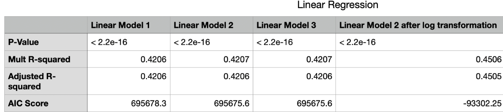
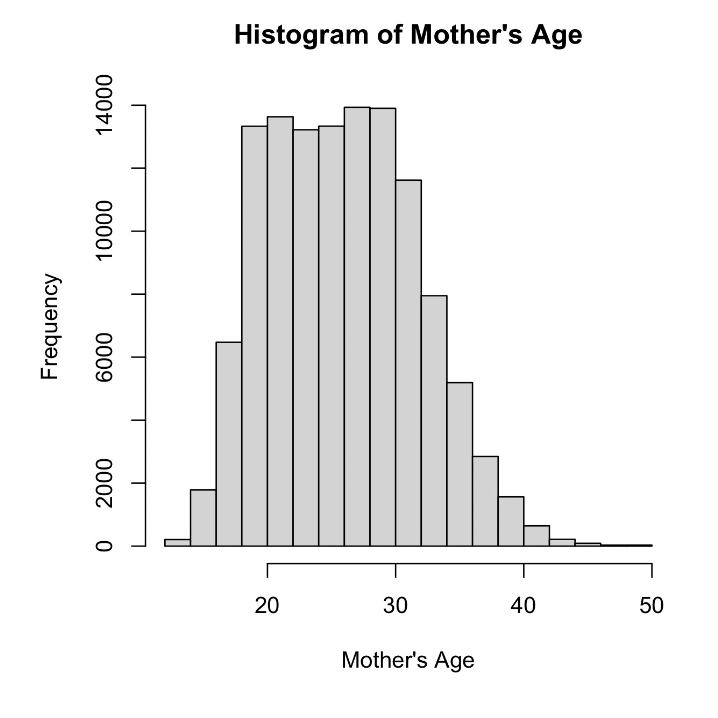
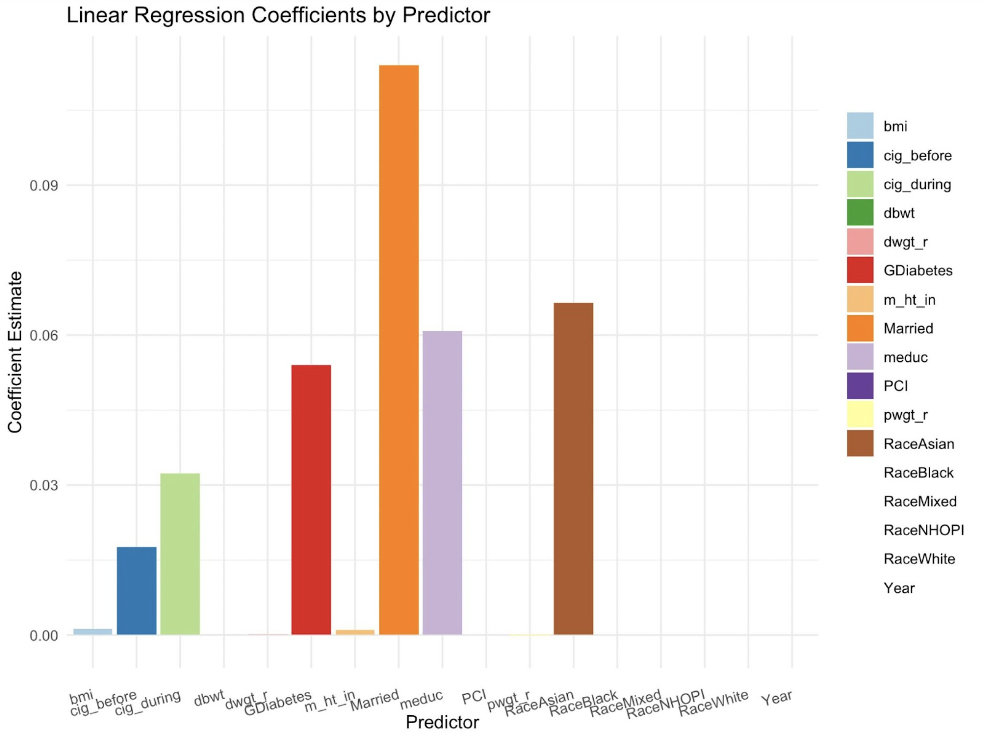
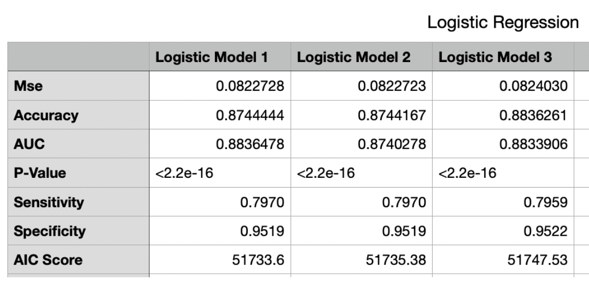
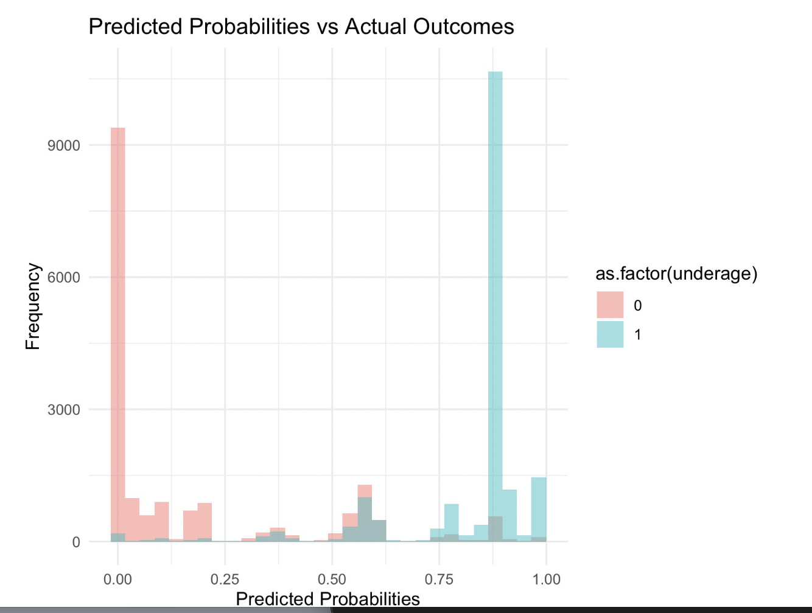
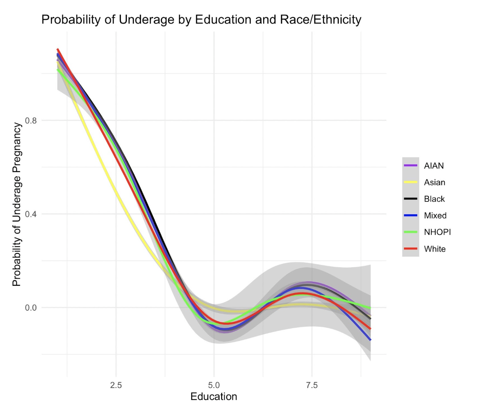

Rows: 120000 Columns: 13
── Column specification ────────────────────────────────────────────────────────
Delimiter: ","
chr (1): Race
dbl (12): mager, meduc, m_ht_in, bmi, pwgt_r, dwgt_r, dbwt, Married, GDiabet...
ℹ Use `spec()` to retrieve the full column specification for this data.
ℹ Specify the column types or set `show_col_types = FALSE` to quiet this message.
Rows: 120000 Columns: 13
── Column specification ────────────────────────────────────────────────────────
Delimiter: ","
chr (1): Race
dbl (12): mager, meduc, m_ht_in, bmi, pwgt_r, dwgt_r, dbwt, Married, GDiabet...
ℹ Use `spec()` to retrieve the full column specification for this data.
ℹ Specify the column types or set `show_col_types = FALSE` to quiet this message.
print(ls())
[1] "cleanedbirth" "has_annotations"
show_col_types =FALSE
Data Analysis: Unraveling the Ties Between Education, Age, and Motherhood
In our quest to understand the relationship between a woman’s education level and the age at which she becomes a mother, we delved deep into the data, guided by a clear set of questions: What roles do socio-economic status and health behaviors play in this dynamic? How do these factors influence the risk of underage pregnancy across different demographics? This analysis is motivated by the need to provide actionable insights for healthcare policy and to support families with limited access to medical resources. We focus on several key variables, such as maternal education, health behaviors, and socio-economic factors, to analyze their influence on maternal age at first birth and to predict underage pregnancy.
Modeling and Inference
1. Linear Regression Analysis on maternal age at first child’s birth
In the linear regression analysis conducted, the dependent variable was the maternal age at first child’s birth (mager), modeled as a function of various maternal characteristics and health-related behaviors. The independent variables in the model included maternal education (meduc), height (m_ht_in), Body Mass Index (BMI), pre-pregnancy weight (pwgt_r), weight at delivery (dwgt_r), marital status (Married), presence of gestational diabetes (GDiabetes), and smoking habits before and during pregnancy (cig_before and cig_during, respectively). Besides, we also joining another two dataset to help use consider the social determinants. First is a dataset about Real Per Capita Personal Income for the United States (RPIPCUS) from 2016 to 2021. Secondly
We used Social Determinants, Health Impact,Gestational Diabetes and Pregnancy Outcomes,Smoking Habits and Height as a Factor to predict the mother age and underage pregnancy. We constructed three linear regression models, each adding layers of complexity and depth to our analysis:
Model 1: Utilizes demographic information.
Model 2: Expands on Model 1 by including socio-economic background information.
Model 3: Incorporates demographic, socio-economic, and birth-related variables.
Comparing multiple R-squared and adjusted R-squared values for the three models provides valuable insights into their goodness-of-fit and explanatory power. Although the differences between the models are subtle, they are important for understanding their relative validity. From the first model (0.4206) the second model (0.4207) and the third model (0.4207), both the multiple R-squared values and the adjusted R-squared values increased slightly, indicating a marginal improvement in explaining the variance of the dependent variable. This suggests that additional variables or improvements introduced in the subsequent models contributed slightly to the overall explanatory power. The adjusted R-squared values (which take into account the number of predictor variables and model complexity) follow a similar trend, showing slight improvements when we move from the first model (0.4206) the second model (0.4206) and the third model (0.4206). This emphasizes the importance of adjusting the model complexity and enhancing the value of the additional variables included. Indeed, the selected model should not only provide a higher R-squared, but should also be consistent with the theoretical framework and provide meaningful insights. Further review of the variables included, their importance, and the context of the study would help to fully understand the utility of the model.It is a given that more variables lead to higher r-square. For the p value of all three models was 2.2e-16 Less than 0.05 means that the three models were judged as “significant”.
The first model AIC scores were 685678.3. The second model AIC scores were 695675.6. The third model predicts motherage by AIC Scores were 695675.6.Model comparisons using the Akaike Information Criterion (AIC) also provided valuable insights into the relative goodness of fit and complexity of the models. The AIC scores (Model 2 had the lowest score of 695675.6) indicated that Model 2 was the most parsimonious and effective in capturing the underlying patterns in the data among the models considered. The careful evaluation of each model’s AIC illuminates the trade-off between goodness-of-fit and model complexity. While a lower AIC indicates a better model fit, this must be balanced against the interpretability and utility of the model in practical applications. In essence, this model comparison exercise not only helps to select the best model, but also emphasizes the importance of a holistic and context-aware approach to statistical modeling. The process from model selection to interpretation provides a continuous cycle of refinement that ensures a dynamic and robust analytical framework for addressing complex research questions.


To summarize we chose the second model. Since the Figure “Histogram of Mother’s Age” shows that our dependent variable is slightly right-skewed, in order to make the age dependent variable more normal, we log-transformed the dependent variable. And the Adjusted R- Squared went from 0.4206 to 0.4506 with a significant increase, while the AIC decreased significantly, from 695675.6 to -993302.25 with a significant decrease. Our logarithmic transformation gets better later, as it is a bit more normalized with respect to the age distribution we were trying to predict. However, the large drop that occurs is surprising and could mean that we are now using a better model, but the reason for such a significant drop is still puzzling and deserves to be investigated later.

Here is the Figure “Linear Regression Coefficients by Predictor” for model 2 after Log transformation, we can have an overview for the important variables for linear regression. Cig-during,Cig-before,GDbiabetes, Married, meduc(Mother education), RaceAsian, all show positive correlation on underage pregnancy.
2. Logistic Regression Analysis on maternal age at first child’s birth
We created a total of three logistic models to predict underage pregnancy.The first model predicted underage pregnancy by demographic. The second model predicted underage pregnancy by demographic and socio economic factors. The third model predicts underage pregnancy by demographic,social economic and birth correlate factor. When we evaluate logistic regression models, we typically look at a variety of metrics: Mean Squared Error (MSE), Accuracy, Area Under the Curve (AUC), P-Value, Sensitivity, Specificity, and Akaike Information Criterion (AIC) Score.

In logistic regression, accuracy is the proportion of correctly categorized instances (true positives and true negatives) to the total instances. It measures the overall correctness of the model’s predictions. As we set 50% as our dividing line, the probability below would count as 0 to underage, and more would count as 1. It is virtually the same across all models, hovering around 87.44%, but model 1 does have the highest accuracy.
MSE stands for Mean Square Error. It is a measure of the average squared difference between the actual and predicted values in a set of data points. In our model, the mse is based on the average absolute difference between predicted probability and actual outcome, which the range of the mse would be limited between 0 to 1. Overall, in our case, our mse got a low MSE overall. As a lower MSE indicates better predictive performance, our model 1 shows a best model as mse to be 0.08227
The Area Under the Curve (AUC) is a performance measurement for the classification problems at various threshold settings. AUC represents the degree to which the model is capable of distinguishing between classes. The higher the AUC, the better the model is at predicting 0s as 0s and 1s as 1s. All models have an AUC score above 0.87, indicating good predictive power, with Model 1 having a marginally higher AUC at 0.8836. Sensitivity (also called the true positive rate) and Specificity (true negative rate) are both measures of a test’s accuracy. Model 3 shows a slightly higher Specificity, indicating it is better at correctly identifying negative outcomes, which could be a deciding factor if the cost of false positives is high in the specific application context.
The AIC Score is used to compare models; the lower the AIC score, the better. Model 1 stands out with a notably lower AIC score (51733.60) than the other two models. This suggests that Model 1, while having a marginal increase in MSE, achieves a better balance between model complexity and goodness of fit to the data. Given the metrics provided, Model 1 might be considered the best model overall, as it maintains high accuracy and specificity, and offers the best AIC score, indicating a more parsimonious model. However, the final choice of the model should also consider the specific context of the analysis, the consequences of false positives and negatives, and whether a reduction in complexity is worth the trade-off for a slight decrease in certain performance metrics.
All three models had similar MSE, accuracy, and AUC values, indicating comparable predictive performance. Model 1, by these measures, could be regarded as the superior model, provided that the differences in model performance are meaningful within the specific practical context of their application.

The histogram bars are colored differently for each outcome category, with one color representing the non-underage cases (0) and another representing the underage cases (1). This plot is helpful for understanding how well the model can separate the two classes. Ideally, in a well-performing logistic regression model, we would expect to see most of the predicted probabilities for the actual underage cases (1) clustered towards the higher end of the probability scale (closer to 1), and the predicted probabilities for the non-underage cases (0) clustered towards the lower end (closer to 0). However, any substantial number of cases far from these peaks, especially if they overlap significantly, might indicate potential issues with model performance.
 Secondly, the probability of underage by education and Race shows all lines start close together at the lower left, indicating a high probability of underage pregnancy at lower education levels for all groups. As education levels increase, the probability of underage pregnancy decreases sharply for each group. This general trend is a common finding in demographic studies, which often show that higher education levels are associated with lower rates of teenage pregnancy.The lines begin to diverge as education increases, suggesting that the impact of education on the probability of underage pregnancy may vary by race and ethnicity. The shaded area around the lines suggests a confidence interval or standard error, showing the range within which the true line is likely to be. This interval seems to widen as education increases, indicating greater uncertainty in the model’s predictions at higher education levels, which could be due to fewer observations in the dataset at these levels.
Limitations and Area for Improvements
First limitation in our work is the high correlation between age and education in our data, and we struggle to mitigate the risk of collinearity caused by these two variables. In the future, we might explore using PCA or other techniques to address this issue and generate deeper insights among the variables.
Secondly, our logistic model initially suffers from imbalance, with only a small portion of the dataset representing underage pregnancy. This presents a risk of bias in an imbalanced dataset. To counteract this bias, we implemented blocking on the underage pregnancy variable, selecting 10,000 cases of underage pregnancy and 10,000 cases of non-underage pregnancy. However, this blocking significantly reduces the effect of the year on the logistic model. In the future, we might develop more balanced models or improve our blocking methods.
Additionally, incorporating data on factors not included in our study, such as cultural influences or access to healthcare, could further refine our understanding.